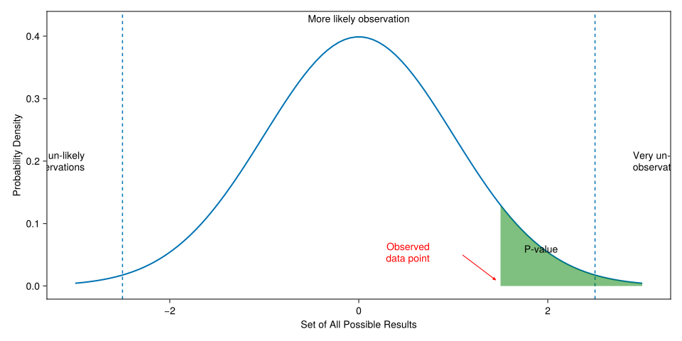

graph TD A[Statistics] --> B[Descriptive] A --> C[Inferential] A --> D[Bayesian] A --> E[Statistical learning] B --> F[Central tendency] B --> G[Distribution] B --> H[Plot] C --> I[T-test] C --> J[ANOVA] E --> K[AI] E --> L[NN]
9. Statistical Inference practices
3316712 AI Computational Pharmaceutical Sciences
Natapol Pornputtapong, PhD
Chulalongkorn University
20 Mar 2026
Statistical testing
Statistics 1
discipline that concerns the collection, organization, analysis, interpretation and presentation of data
Statistic tools Family
Drug testing
- 2 new pain killer, test in 10 persons that have pain.
- A: 8 of 10 get better.
- B: 9 of 10 get better.
- 2 new pain killer, test in 100 persons that have pain.
- A: 70 of 100 get better.
- B: 79 of 100 get better.
Statistical inference
Observe
Sample
——>
Infer
Population
Hypothesis testing: statistical inference
- Convert the research hypothesis to null hypothesis and try to disprove. The decide which test & tails to be used.
- decide on a significance level – the probability with which we are prepared to make a wrong decision if the null hypothesis is true.
- Experimental design & do data collection
- Perform requirement check then Calculate p-value
- Compare p-value with a significance level then end up either accepting or rejecting the null hypothesis.
- Interpretation
State the hypothesis
- Parameters
- mean (\mu)
- standard variation (\sigma)
- distribution
- Alternative relationship
- not equal (\neq) - two tail
- greater than (\gt) - one tail
- lower than (\lt) - one tail
Hypotheses
| Null (not-sig: true) | Alternative (sig: true) |
|---|---|
| \mu = 15 | \mu \neq 15 |
| \mu \leq 15 | \mu \gt 15 |
| \mu_1 = \mu_2 | \mu_1 \neq \mu_2 |
| \mu_1 \geq \mu_2 | \mu_1 \lt \mu_2 |
| \mu_1 = \mu_2 = \mu_3 ... | \mu_1 \neq \mu_2, \mu_1 \neq \mu_3 ... |
Choose the test: Parametric and non-parametric
Parametric
- test based on parameterized distributions
- T-Test
- ANOVA
- More strictness
- Requirement check
Non parametric
- not based on parameterized distributions
- Mann-Whitney
- Kruskal-Wallis
- Less strictness
- No requirement
Decide the significant level
| null hypothesis is true | null hypothesis is false | |
|---|---|---|
| accept null hypothesis | Good | Type II (\beta) error |
| reject null hypothesis | Type I (\alpha) error | Good |
Choosing the test
- Choosing the test based on the hypothesis
- Decide on the significant level & collect the data
- Choose the parametric first
- Checking the assumption of the test
- Calculate p-value, confidence limit
- Accept or reject null hypothesis
P-Value

Wrong interpretation of P-Value
When the same hypothesis is tested in different studies; if P of Drug ‘A’ is smaller than drug ‘B’, then drug ‘A’ is more effective than drug ‘b’.
choosing Statistic Testing
- type of parameter: mean, variance, distribution, proportion
- number of sample group: one, two, more
- type of variable: focus on continuous
- number of independent variable: focus on one
- number of dependent variable: focus on one
- parametric vs non parametric
Testing of Mean 1 sample
| normal ? | extra requirement | test to use |
|---|---|---|
| yes | N/A | one sample T-Test of mean |
| no | N/A | Mann-Whitney U |
Testing of Mean 2 samples
| normal ? | extra requirement | test to use |
|---|---|---|
| yes | sample pair | paired T-Test of mean |
| no | sample pair | Wilcoxon signed rank test |
| yes | equal variance | two sample T-Test of mean of equal variance |
| yes | nonequal variance | two sample T-Test of mean of non equal variance |
| no | N/A | Wilcoxon rank-sum test |
Testing of Mean more samples
| normal ? | extra requirement | test to use |
|---|---|---|
| yes | N/A | One-Way ANOVA |
| no | N/A | Kruskal-Wallis test |
Testing of Variance
- Bartlett Test of Homogeneity of Variances
Testing of Distribution
- Shapiro-Wilk test of normality
library installation
calling library
The NHANES data
| Variable | Definition |
|---|---|
| id | A unique sample identifier |
| Gender | Gender (sex) of study participant coded as male or female |
| Age | Age in years at screening of study participant. Note: Subjects 80 years or older were recorded as 80. |
| Race | Reported race of study participant, including non-Hispanic Asian category: Mexican, Hispanic, White, Black, Asian, or Other. Not availale for 2009-10. |
| Education | Educational level of study participant Reported for participants aged 20 years or older. One of 8thGrade, 9-11thGrade, HighSchool, SomeCollege, or CollegeGrad. |
| MaritalStatus | Marital status of study participant. Reported for participants aged 20 years or older. One of Married, Widowed, Divorced, Separated, NeverMarried, or LivePartner (living with partner). |
| RelationshipStatus | Simplification of MaritalStatus, coded as Committed if MaritalStatus is Married or LivePartner, and Single otherwise. |
| Insured | Indicates whether the individual is covered by health insurance. |
| Income | Numerical version of HHIncome derived from the middle income in each category |
| Poverty | A ratio of family income to poverty guidelines. Smaller numbers indicate more poverty |
| HomeRooms | How many rooms are in home of study participant (counting kitchen but not bathroom). 13 rooms = 13 or more rooms. |
| HomeOwn | One of Home, Rent, or Other indicating whether the home of study participant or someone in their family is owned, rented or occupied by some other arrangement. |
| Work | Indicates whether the individual is current working or not. |
| Weight | Weight in kg |
| Height | Standing height in cm. Reported for participants aged 2 years or older. |
| BMI | Body mass index (weight/height2 in kg/m2). Reported for participants aged 2 years or older. |
| Pulse | 60 second pulse rate |
| BPSys | Combined systolic blood pressure reading, following the procedure outlined for BPXSAR. |
| BPDia | Combined diastolic blood pressure reading, following the procedure outlined for BPXDAR. |
| Testosterone | Testerone total (ng/dL). Reported for participants aged 6 years or older. Not available for 2009-2010. |
| HDLChol | Direct HDL cholesterol in mmol/L. Reported for participants aged 6 years or older. |
| TotChol | Total HDL cholesterol in mmol/L. Reported for participants aged 6 years or older. |
| Diabetes | Study participant told by a doctor or health professional that they have diabetes. Reported for participants aged 1 year or older as Yes or No. |
| DiabetesAge | Age of study participant when first told they had diabetes. Reported for participants aged 1 year or older. |
| nPregnancies | How many times participant has been pregnant. Reported for female participants aged 20 years or older. |
| nBabies | How many of participants deliveries resulted in live births. Reported for female participants aged 20 years or older. |
| SleepHrsNight | Self-reported number of hours study participant usually gets at night on weekdays or workdays. Reported for participants aged 16 years and older. |
| PhysActive | Participant does moderate or vigorous-intensity sports, fitness or recreational activities (Yes or No). Reported for participants 12 years or older. |
| PhysActiveDays | Number of days in a typical week that participant does moderate or vigorous-intensity activity. Reported for participants 12 years or older. |
| AlcoholDay | Average number of drinks consumed on days that participant drank alcoholic beverages. Reported for participants aged 18 years or older. |
| AlcoholYear | Estimated number of days over the past year that participant drank alcoholic beverages. Reported for participants aged 18 years or older. |
| SmokingStatus | Smoking status: Current Former or Never. |
import data to tibbles
5000×32 DataFrame
4975 rows omitted
| Row | id | Gender | Age | Race | Education | MaritalStatus | RelationshipStatus | Insured | Income | Poverty | HomeRooms | HomeOwn | Work | Weight | Height | BMI | Pulse | BPSys | BPDia | Testosterone | HDLChol | TotChol | Diabetes | DiabetesAge | nPregnancies | nBabies | SleepHrsNight | PhysActive | PhysActiveDays | AlcoholDay | AlcoholYear | SmokingStatus |
|---|---|---|---|---|---|---|---|---|---|---|---|---|---|---|---|---|---|---|---|---|---|---|---|---|---|---|---|---|---|---|---|---|
| Int64 | String7 | Int64 | String15 | String15 | String15 | String15 | String3 | String7 | String7 | String3 | String7 | String15 | String7 | String7 | String7 | String3 | String3 | String3 | String7 | String7 | String7 | String3 | String3 | String3 | String3 | String3 | String3 | String3 | String3 | String3 | String7 | |
| 1 | 62163 | male | 14 | Asian | NA | NA | NA | Yes | 100000 | 4.07 | 6 | Rent | NA | 49.4 | 168.9 | 17.3 | 72 | 107 | 37 | 274.95 | 1.14 | 3.98 | No | NA | NA | NA | NA | No | 1 | NA | NA | NA |
| 2 | 62172 | female | 43 | Black | High School | NeverMarried | Single | Yes | 22500 | 2.02 | 4 | Rent | NotWorking | 98.6 | 172.0 | 33.3 | 80 | 103 | 72 | 47.53 | 1.89 | 4.37 | No | NA | 3 | 2 | 8 | No | 2 | 3 | 104 | Current |
| 3 | 62174 | male | 80 | White | College Grad | Married | Committed | Yes | 70000 | 4.3 | 7 | Own | NotWorking | 95.8 | 168.1 | 33.9 | 56 | 97 | 39 | 642.82 | 1.4 | 5.25 | No | NA | NA | NA | 9 | No | 7 | NA | 0 | Never |
| 4 | 62174 | male | 80 | White | College Grad | Married | Committed | Yes | 70000 | 4.3 | 7 | Own | NotWorking | 95.8 | 168.1 | 33.9 | 56 | 97 | 39 | 642.82 | 1.4 | 5.25 | No | NA | NA | NA | 9 | No | 5 | NA | 0 | Never |
| 5 | 62175 | male | 5 | White | NA | NA | NA | Yes | 12500 | 0.39 | 7 | Rent | NA | 23.9 | 119.8 | 16.7 | NA | NA | NA | NA | NA | NA | No | NA | NA | NA | NA | NA | 7 | NA | NA | NA |
| 6 | 62176 | female | 34 | White | College Grad | Married | Committed | Yes | 100000 | 5.0 | 8 | Own | NotWorking | 68.7 | 171.6 | 23.3 | 92 | 107 | 69 | 21.11 | 1.42 | 4.42 | No | NA | 5 | 2 | 7 | Yes | 5 | 2 | 104 | Never |
| 7 | 62178 | male | 80 | White | High School | Widowed | Single | Yes | 2500 | 0.05 | 6 | Own | NotWorking | 85.9 | 173.5 | 28.5 | 68 | 121 | 72 | 562.78 | 1.22 | 5.2 | No | NA | NA | NA | 6 | No | NA | NA | NA | Never |
| 8 | 62180 | male | 35 | White | College Grad | Married | Committed | Yes | 22500 | 0.87 | 6 | Own | Working | 89.0 | 178.7 | 27.9 | 66 | 107 | 66 | 401.78 | 0.85 | 3.7 | No | NA | NA | NA | 7 | No | NA | 1 | 2 | Never |
| 9 | 62186 | female | 17 | Black | NA | NA | NA | Yes | 22500 | 0.53 | 6 | Own | NotWorking | 63.5 | 166.4 | 22.9 | 86 | 108 | 64 | 27.0 | 1.4 | 3.21 | No | NA | NA | NA | 7 | Yes | 4 | NA | NA | NA |
| 10 | 62190 | female | 15 | Mexican | NA | NA | NA | Yes | 30000 | 0.54 | 4 | Rent | NA | 38.5 | 150.5 | 17.0 | 76 | 113 | 27 | 22.2 | 1.63 | 4.11 | No | NA | NA | NA | NA | No | 7 | NA | NA | NA |
| 11 | 62199 | male | 57 | White | College Grad | LivePartner | Committed | Yes | 100000 | 5.0 | 4 | Rent | Working | 96.9 | 186.0 | 28.0 | 84 | 110 | 65 | 269.24 | 0.91 | 4.42 | No | NA | NA | NA | 8 | Yes | 2 | 1 | 260 | Former |
| 12 | 62199 | male | 57 | White | College Grad | LivePartner | Committed | Yes | 100000 | 5.0 | 4 | Rent | Working | 96.9 | 186.0 | 28.0 | 84 | 110 | 65 | 269.24 | 0.91 | 4.42 | No | NA | NA | NA | 8 | Yes | NA | 1 | 260 | Former |
| 13 | 62199 | male | 57 | White | College Grad | LivePartner | Committed | Yes | 100000 | 5.0 | 4 | Rent | Working | 96.9 | 186.0 | 28.0 | 84 | 110 | 65 | 269.24 | 0.91 | 4.42 | No | NA | NA | NA | 8 | Yes | 7 | 1 | 260 | Former |
| ⋮ | ⋮ | ⋮ | ⋮ | ⋮ | ⋮ | ⋮ | ⋮ | ⋮ | ⋮ | ⋮ | ⋮ | ⋮ | ⋮ | ⋮ | ⋮ | ⋮ | ⋮ | ⋮ | ⋮ | ⋮ | ⋮ | ⋮ | ⋮ | ⋮ | ⋮ | ⋮ | ⋮ | ⋮ | ⋮ | ⋮ | ⋮ | ⋮ |
| 4989 | 71907 | male | 80 | White | High School | Married | Committed | Yes | 60000 | 4.08 | 6 | Own | NotWorking | 71.5 | 175.4 | 23.2 | 54 | 148 | 70 | 402.9 | 1.27 | 4.37 | No | NA | NA | NA | 5 | Yes | NA | NA | 0 | Never |
| 4990 | 71907 | male | 80 | White | High School | Married | Committed | Yes | 60000 | 4.08 | 6 | Own | NotWorking | 71.5 | 175.4 | 23.2 | 54 | 148 | 70 | 402.9 | 1.27 | 4.37 | No | NA | NA | NA | 5 | Yes | 4 | NA | 0 | Never |
| 4991 | 71907 | male | 80 | White | High School | Married | Committed | Yes | 60000 | 4.08 | 6 | Own | NotWorking | 71.5 | 175.4 | 23.2 | 54 | 148 | 70 | 402.9 | 1.27 | 4.37 | No | NA | NA | NA | 5 | Yes | 7 | NA | 0 | Never |
| 4992 | 71908 | female | 66 | White | College Grad | Widowed | Single | Yes | 70000 | 4.55 | 8 | Own | Working | 88.7 | 159.0 | 35.1 | 76 | 114 | 70 | 26.0 | 1.86 | 6.47 | No | NA | 2 | 2 | 6 | No | 5 | 1 | 5 | Never |
| 4993 | 71908 | female | 66 | White | College Grad | Widowed | Single | Yes | 70000 | 4.55 | 8 | Own | Working | 88.7 | 159.0 | 35.1 | 76 | 114 | 70 | 26.0 | 1.86 | 6.47 | No | NA | 2 | 2 | 6 | No | NA | 1 | 5 | Never |
| 4994 | 71909 | male | 28 | Mexican | 9 - 11th Grade | NeverMarried | Single | No | 7500 | 0.46 | 3 | Rent | Working | 92.3 | 177.3 | 29.4 | 68 | 124 | 65 | 490.43 | 1.22 | 3.9 | No | NA | NA | NA | 6 | Yes | NA | NA | NA | Current |
| 4995 | 71909 | male | 28 | Mexican | 9 - 11th Grade | NeverMarried | Single | No | 7500 | 0.46 | 3 | Rent | Working | 92.3 | 177.3 | 29.4 | 68 | 124 | 65 | 490.43 | 1.22 | 3.9 | No | NA | NA | NA | 6 | Yes | NA | NA | NA | Current |
| 4996 | 71909 | male | 28 | Mexican | 9 - 11th Grade | NeverMarried | Single | No | 7500 | 0.46 | 3 | Rent | Working | 92.3 | 177.3 | 29.4 | 68 | 124 | 65 | 490.43 | 1.22 | 3.9 | No | NA | NA | NA | 6 | Yes | NA | NA | NA | Current |
| 4997 | 71910 | female | 0 | White | NA | NA | NA | Yes | 87500 | 3.37 | 10 | Own | NA | 6.7 | NA | NA | NA | NA | NA | NA | NA | NA | NA | NA | NA | NA | NA | NA | NA | NA | NA | NA |
| 4998 | 71911 | male | 27 | Mexican | College Grad | Married | Committed | Yes | 87500 | 3.25 | 10 | Own | Working | 96.7 | 175.8 | 31.3 | 74 | 133 | 74 | 509.0 | 1.06 | 5.72 | No | NA | NA | NA | 6 | No | 3 | 5 | 4 | Never |
| 4999 | 71915 | male | 60 | White | College Grad | NeverMarried | Single | Yes | 70000 | 5.0 | 4 | Own | Working | 78.4 | 168.8 | 27.5 | 76 | 147 | 73 | 505.13 | 0.93 | 4.94 | Yes | 56 | NA | NA | 6 | No | 1 | NA | 0 | Never |
| 5000 | 71915 | male | 60 | White | College Grad | NeverMarried | Single | Yes | 70000 | 5.0 | 4 | Own | Working | 78.4 | 168.8 | 27.5 | 76 | 147 | 73 | 505.13 | 0.93 | 4.94 | Yes | 56 | NA | NA | 6 | No | NA | NA | 0 | Never |
view tibbles
normality test: Shapiro-Wilk test of normality
H_0 : data distribution = normal distribution H_1 : data distribution \neq normal distribution
Bartlett Test of Homogeneity of Variances
H_0 : Var_{diabetes} = Var_{nondiabetes} H_1 : Var_{diabetes} \neq Var_{nondiabetes}
t-test for a population mean (variance unknown)
- Object
- To investigate the significance of the difference between an assumed population mean μ0 and a sample mean x ̄.
- Limitations
- If the variance of the population σ 2 is known, a more powerful test is available: the Z-test for a population mean (Test 1).
- The test is accurate if the population is normally distributed. If the population is not normal, the test will give an approximate guide.
- Example: Most of diabetic patient are overweight
one sample T Test
H_0 : \mu_{BMI_{diabetic}} = 25 H_1 : \mu_{BMI_{diabetic}} \neq 25
one sample T Test: inferiority test
H_0 : \mu_{BMI_{diabetic}} \geq 25 H_1 : \mu_{BMI_{diabetic}} < 25
one sample T Test: superiority test
H_0 : \mu_{BMI_{diabetic}} \leq 25 H_1 : \mu_{BMI_{diabetic}} > 25
t-test for two population means (variances unknown but equal)
- Object
- To investigate the significance of the difference between the means of two populations.
- Limitations
- If the variance of the populations is known, a more powerful test is available: the Z-test for two population means (Test 2).
- The test is accurate if the populations are normally distributed. If the populations are not normal, the test will give an approximate guide.
two sample T Test: equal variance, two-tail
H_0 : \mu_{BMI_{diabetic}} = \mu_{BMI_{nondiabetic}} H_1 : \mu_{BMI_{diabetic}} \neq \mu_{BMI_{nondiabetic}}
t-test for two population means (variances unknown and unequal)
- Object
- To investigate the significance of the difference between the means of two populations.
- Limitations
- If the variances of the populations are known, a more powerful test is available: the Z-test for two population means (Test 3).
- The test is approximate if the populations are normally distributed or if the sample sizes are sufficiently large.
- The test should only be used to test the hypothesis μ1 = μ2.
two sample T Test: not equal variance, two-tail
H_0 : \mu_{BMI_{diabetic}} = \mu_{BMI_{nondiabetic}} H_1 : \mu_{BMI_{diabetic}} \neq \mu_{BMI_{nondiabetic}}
two sample T Test: not equal variance, one-tail
H_0 : \mu_{BMI_{diabetic}} \leq \mu_{BMI_{nondiabetic}} H_1 : \mu_{BMI_{diabetic}} > \mu_{BMI_{nondiabetic}}
Wilcoxon rank-sum test (a.k.a. Mann-Whitney U test)
ANOVA
comparing BMI among Race
preparing data
box plot
summarize by group
Analysis of Varience
H_0 : \mu_{BMI_{Asian}} = \mu_{BMI_{Black}} = \mu_{BMI_{White}} = \mu_{BMI_{Mexican}} = \mu_{BMI_{Hispanic}}
Post-hoc
Post-hoc analysis via pairwise comparisonssimple linear regression
Model
BMI = \beta_0 + \beta_1 Age 
Assumptions
- Non-linearity
- Heteroscedasticity
- Outlier values
- Normality of residuals
Non-linearity

Heteroscedasticity

Normality of residuals


plot
Fitting
Model Diagnostics
References
- https://sparkbyexamples.com/r-programming/select-rows-in-r/
- https://4va.github.io/biodatasci/
- https://bioconnector.github.io/